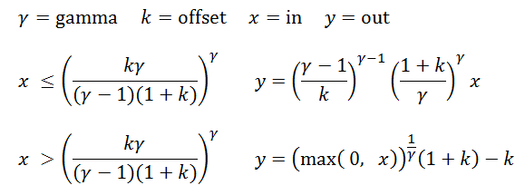

它是 Academy/ASC XML 颜色变换格式的 Autodesk 扩展。
版本 1.2。
| 值 | 含义 |
|---|---|
| "basicFwd" | 应用幂律和 GammaParams 元素中指定的 Gamma 值。GammaParams 元素不得具有 offset 属性。
|
| "basicRev" | 应用幂律和反向 Gamma 值。GammaParams 元素不得具有 offset 属性。
|
| "moncurveFwd" | 应用一个函数，该函数在原点（黑色）附近具有线性分段，在较高值处具有幂律分段。连接时，该曲线在值和切线处是连续的。此类型曲线在 Rec. 709、sRGB 和 CIE L* 方程式中使用。
GammaParams 元素必须具有 offset 属性。
|
| "moncurveRev" | 应用一个函数，该函数在原点（黑色）附近具有线性分段，在较高值处具有反向幂律分段。GammaParams 元素必须具有 offset 属性。
 |
<ProcessList id="9e999646-3e76-4374-814c-e4c46c6438de" version="1.2">
</Matrix>
<Gamma inBitDepth="32f" outBitDepth="12i" style="basicRev">
<GammaParams gamma="2.400000000000000" />
</Gamma>
</ProcessList>
<ProcessList id="1b86aac2-1fdb-4dd8-bc6b-54f3551b9bd4" version="1.2">
<Gamma inBitDepth="32f" outBitDepth="32f" style="moncurveFwd">
<GammaParams gamma="2.600000000000000" offset="0.050000" />
</Gamma>
</ProcessList>